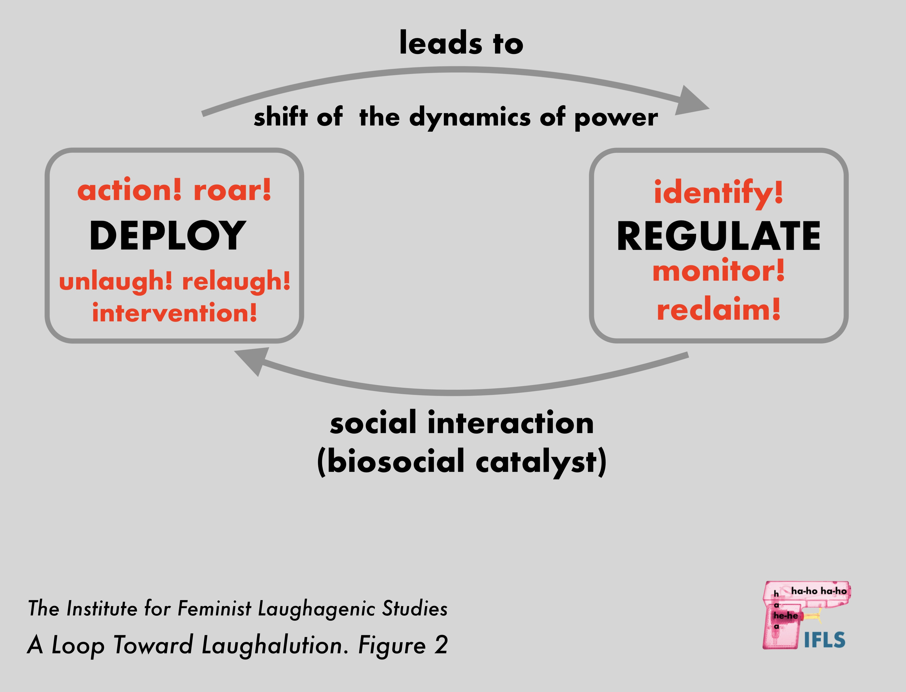

The Institute for Feminist Laughagenic Studies
RE-LAUGH AND UN-LAUGH TOWARD LAUGHALUTION

The IFLS supports intersectional laughalution and experiments in transgressive feminist laughter.
Our practice is based on the belief that we are conditioned as gendered subjects by the rules of laughter’s timing and its bodily presentation.
- IDENTIFY via IFLS index system
- REGULATE with awareness of oppressive laughter norms
- DEPLOY feminist and resistance-oriented laughagenic practices

05.24.2010/ DEMO #IFSL053/ #IFSL069 (group)/ types: volitional/collective
EXCERPT BELOW: Zana and her allies intercept Coca-Cola meetings.
Learn more: IFLS STOPS COCA-COLA'S SEXIST CAMPAIGN
The Institute for Feminist Laughagenic Studies
Ronald Reagan Building 1300 Pennsylvania Avenue, NW Washington, DC 20004
- (202) 312-1300 (tel)
- (202) 225-6999 (fax)